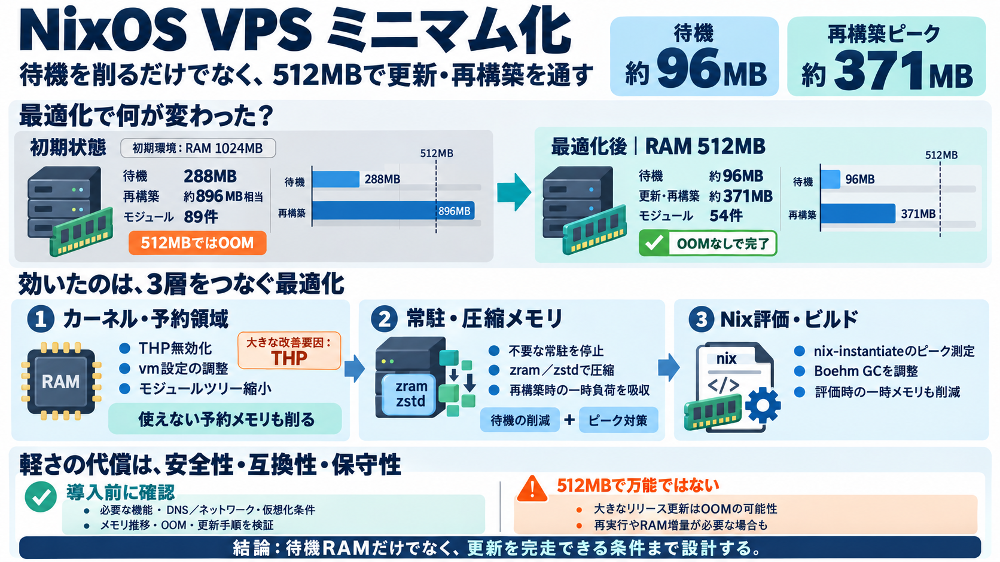

nixpkgs/nixos/modules/config/zram.nix at master · NixOS/nixpkgs · GitHub
''; }; }; }; config = lib.mkIf cfg.enable { assertions = [ { assertion = cfg.writebackDevice == null || cfg.swapD…

待機時RAM約96MB・再構築（必要ならカーネル切替）を512MBで完走する、という目標に向けた構成最適化の記録です。
（要旨：何を削り、何が壊れ得るか）
NixOSは宣言的に制御できる一方、カーネル機能や常駐を削ると「安全性・互換性・将来のメンテ性」を損ねる可能性があります。
判断の軸は「本当に不要か／更新で前提が崩れないか」です。
この取り組みの中心は「待機が軽い」だけでなく、512MB環境でチャネル更新＋再構築（必要ならカーネル切替）を完走させる点です。
単発の性能ではなく、更新プロセスも“対象”にしています。
カーネルモジュール読み込みは89件からスタート。
改善は「常駐削減」だけでなく、THP/予約メモリ、カーネル機能の間引き、zram・vm調整、Nix評価GCまで連結して行われています。
transparent_hugepage無効化は“単発の最大級”の改善として挙げられています。
THP有効時、vm.min_free_kbytesが増え、通常使えない予約領域が膨らんで可用メモリが目減りするためです。
ブラックリストで起動時ロードを減らすだけでなく、system.modulesTreeを置き換える派生（trimmedModules）で、ディスク上のモジュールも縮小しudevの対象も減らす狙いがあります。
「設定」ではなく「成果物」への手を入れる点が大きいです。
目的が「更新を通す」ため、ランタイムだけでなく一時メモリ設計が重要になります。
nix-instantiateの評価でのピークを測り、Boehm GCパラメータで数百MB単位の削減を狙っています。
これは実行時だけでなく「ビルド/評価の一時メモリ」も対象にしている点が重要です。
26.05→unstableのような重い更新では、512MBが厳しくOOMすることがあり、二度実行やより多いRAMが必要になり得ます。
軽量化は“余裕”を削っている裏返しでもある、という論旨です。
結論：再現条件（クラウドDNS/ネットワーク、仮想化形態、更新方式、負荷）を切り分け、追加検証（メモリ推移/OOM/更新手順）を前提に。
''; }; }; }; config = lib.mkIf cfg.enable { assertions = [ { assertion = cfg.writebackDevice == null || cfg.swapD…
You can also do this for specific profiles, e.g. ``` $ nix-env -p /nix/var/nix/profiles/per-user/eelco/profile --delete…
[2:06] type CF DISD SDA and we're going to go ahead and select GPT since we are on a UEFI system and for the first parti…
Swappiness controls how aggressively swap space is used, specifically how to free up memory when needed. By default, Lin…
What is different is that only changes declared in your configuration file are guaranteed to be part of the system defin…